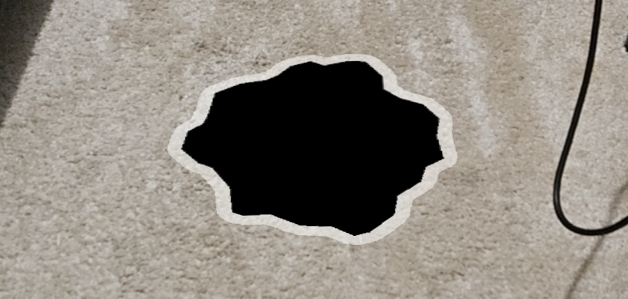
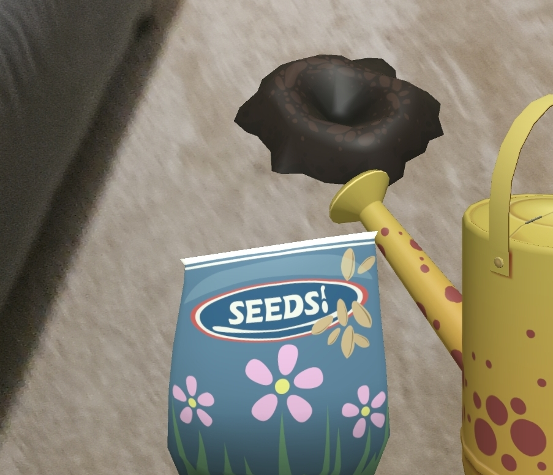
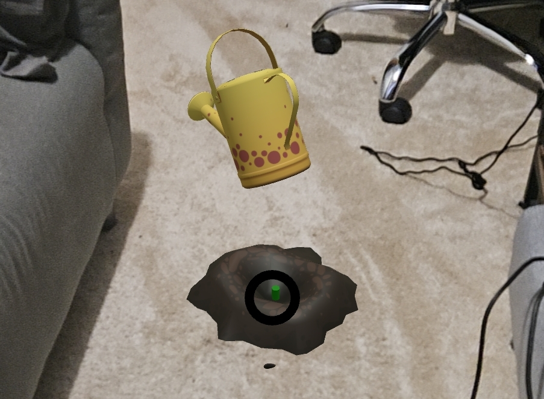

Instructions
When you enter AR, look around your space until a shadow appears. Tap the shadow to place soil at that position.

Tap to select either the seed packet or watering can to use, and then tap in the center to use it.

Plant a seed in the dirt, and then water twice to grow a sunflower. Remember to aim!
